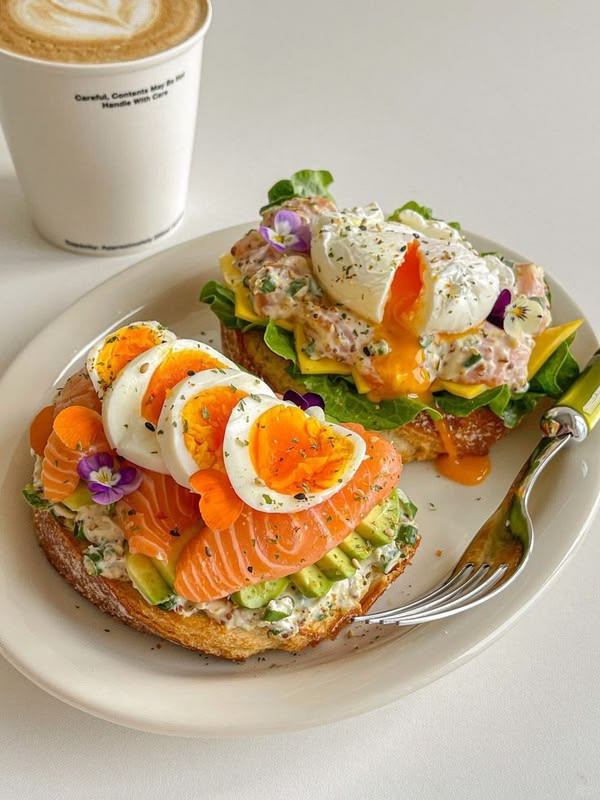
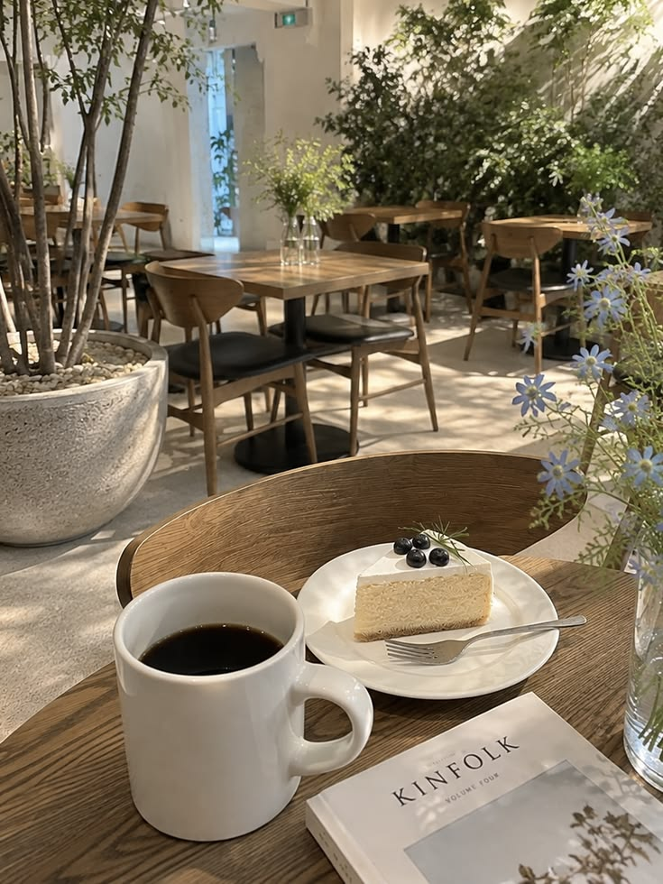

[맛집리뷰] 꼭 가봐야 할 도심 속 비주얼 디저트 & 요리 솔직 리뷰 🍽️
입안 가득 느껴지는 신선한 풍미와 정성스러운 차림상! 미카가 직접 방문해서 맛보고 엄선한 내돈내산 맛집 후기...
"맛있는 하루, 예쁜 순간, 그리고 소소한 행복"
안녕하세요, 미카(MIKA)입니다 🌿
사랑스러운 반려조 앵무새 미미와 함께하는 일상 이야기,
진짜 맛있는 맛집리뷰, 감성 가득한 여행리뷰,
아늑한 힐링 카페리뷰를 나누고 있습니다.
'미카의 일상'은 매일 반복되는 날들 속에서 찾아낸 반짝이는 행복 조각들을 담아내는 공간입니다. 진짜 엄선된 맛집, 눈과 마음이 즐거운 감성 여행지, 그리고 햇살 따스한 디저트 카페까지— 곁을 지키는 귀여운 앵무새 미미와의 다정한 일상을 네이버 블로그에서 실시간으로 공유하고 있습니다 ♡
파스텔 에메랄드빛 깃털과 맑은 눈망울이 너무 매력적인 미카의 반려조 미미입니다! 미카가 블로그 포스팅을 작성할 때 곁에서 총총거리며 꼭 붙어있는 미카의 일상 마스코트예요 ♡
미카의 블로그를 대표하는 메뉴를 둘러보세요!


"분위기 좋은 감성 디저트 카페"
햇살 가득한 디저트 카페부터 원두 향 진한 감성 카페 탐방기, 시그니처 음료 & 베이커리 솔직 평가!
카페 포스팅 보기클릭하면 네이버 블로그 해당 게시글 주소로 즉시 이동합니다 ♡
입안 가득 느껴지는 신선한 풍미와 정성스러운 차림상! 미카가 직접 방문해서 맛보고 엄선한 내돈내산 맛집 후기...
바람과 햇살이 맞닿는 아늑한 산책로 따라 떠나는 주말 드라이브! 인생샷 스팟과 감성 숙소 팁 총정리...
잔잔하게 들려오는 팝송과 그윽한 원두 향기! 여유로운 주말 오후를 보낼 수 있는 아늑한 카페 공간...
노트북 키보드 위에서 콕콕거리며 애교 부리는 파스텔빛 미미의 심쿵 모먼트 사진 모음!
사진에 마우스를 올리면 예쁜 감성을 더 깊게 느낄 수 있어요 ♡